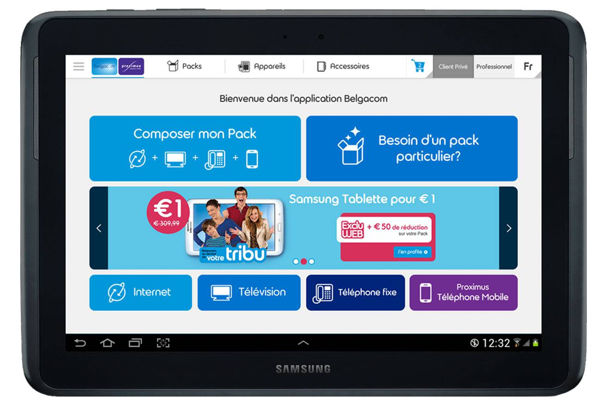
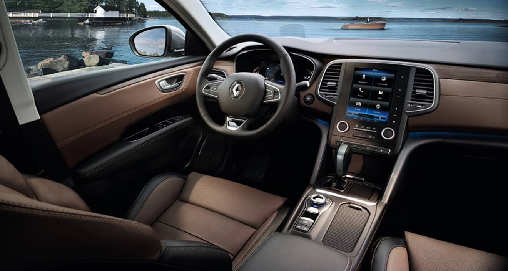
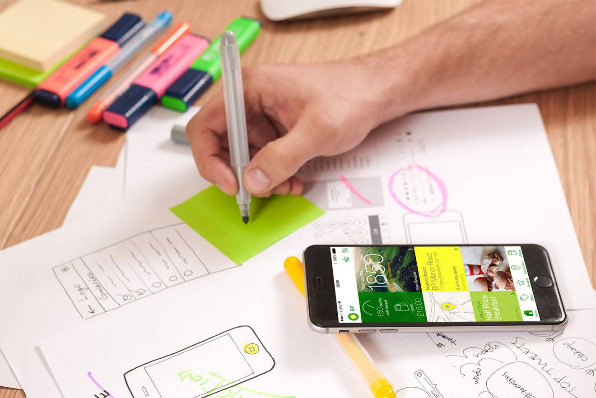
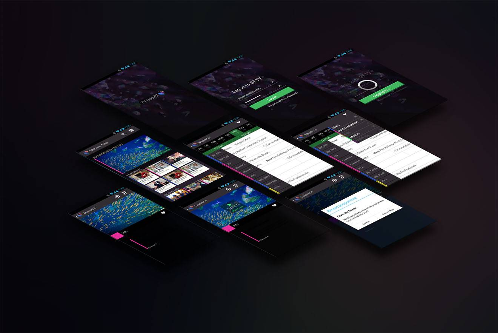
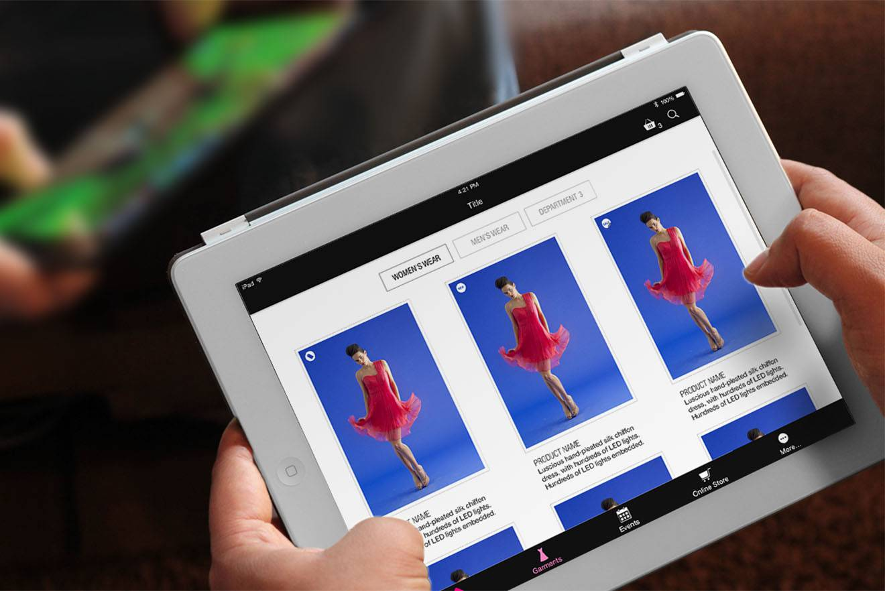
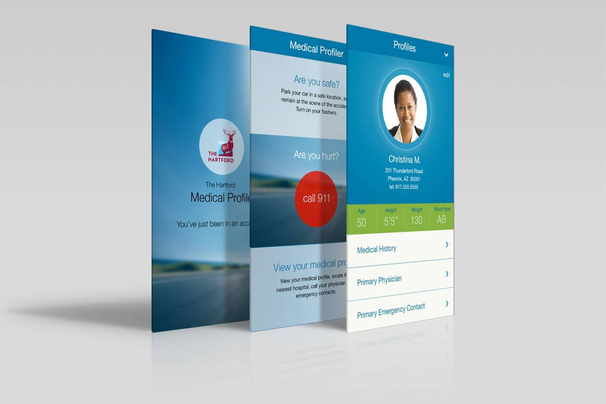
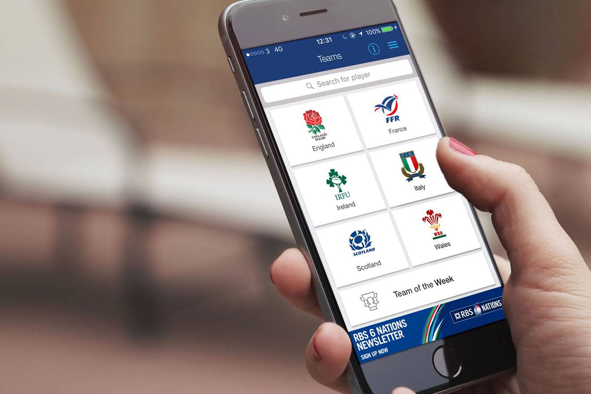

<!DOCTYPE html><html lang="en"></html><head><title>Jon Lazarini - UX Designer and Front-End Developer</title><meta charset="UTF-8"><meta http-equiv="X-UA-Compatible" content="IE=Edge"><meta http-equiv="Content-Type" content="text/html" charset="UTF-8"><meta name="viewport" content="width=device-width, initial-scale=1"><meta name="keywords" content="UX, User Experience, UI, User Interface, Agile, Scrum, HCI, Front-end, Cx, Customer experience, Design, UX Research, UX Design, Cognitive sciences, Psychologie, Ergonomie, Ergonomy"><meta name="description" content="Jon Lazarini is a UX Designer and Front-end developer specialized in UX, UI, HCI. This is a portfolio website about User Experience, User Interface, front-end developement and Agile methodologies"><meta name="robots" content=""><link rel="shortcut icon" href="./favicon.ico"><style>div.logo{width:8.59375%;height:8.59375%;display:block;background:url("./assets/img/icons/logo.svg") no-repeat;float:left;text-indent:-9999px;margin-left:1em;margin-top:1em;transition:all 0.2s ease-in-out;overflow:hidden;*zoom:1}.nav{float:right}@media screen and (max-width: 768px){.nav{width:100%;border-top:1px solid;border-color:#ddd;margin:0 auto;padding:0}}@media screen and (max-width: 768px){.nav ul.nav-list{width:100%;text-align:center;display:none}}.nav-open .nav ul.nav-list{display:block}.nav ul.nav-list li{display:inline-block}@media screen and (max-width: 768px){.nav ul.nav-list li{display:block;margin:0 auto;padding:0}}li.nav-elements a{text-transform:capitalize;margin:0 10px 0 10px;font-weight:400;border-bottom:none;background-color:transparent}@media screen and (max-width: 768px){li.nav-elements a{width:100%;display:block;text-align:center;margin:0 auto;padding:20px 0 20px 0;border-bottom:1px solid;border-color:#f6f6f6}}li.nav-elements a:last-child{border-bottom:none}div .icon-menu{font-size:36px;margin:0 auto;text-align:center;vertical-align:middle;display:table-cell}div div .icon-menu{color:#4314b0}div .icon-menu:hover{color:#844ffd;font-size:44px}.nav-mobile{float:right;width:62px;height:62px;display:none;transition:all 0.4s ease}@media screen and (max-width: 768px){.nav-mobile{display:table}}header{height:0.19531em;transition:all 0.4s ease}body{padding-top:15.625%}@media screen and (max-width: 480px){body{padding-top:0}}.header{width:100%;background-color:#fff;opacity:1;margin-bottom:-0.3em;padding-bottom:0.25em;position:relative;z-index:150;transition:all 0.4s ease;overflow:hidden;*zoom:1}@media screen and (max-width: 768px){.header{padding-bottom:0px}}.main-nav-scrolled{box-shadow:0px 1px 2px rgba(0,0,0,0.1);position:fixed;top:0;opacity:0.8;font-size:14px;height:inherit;background:#fff;text-align:left;padding-bottom:0}div.logo .main-nav-logo-scrolled{height:62px;width:62px;filter:progid:DXImageTransform.Microsoft.Alpha(Opacity=10);opacity:0.1}
div.hero-image{background-image:url("./assets/img/uxbackground-1320px.jpg");height:100vh;background-size:cover;display:-ms-flexbox;display:flex;-ms-flex-direction:column;flex-direction:column;-ms-flex-pack:center;justify-content:center;-ms-flex-align:center;align-items:center}@media screen and (max-width: 1280px){div.hero-image{background-image:url("./assets/img/uxbackground-960px.jpg")}}@media screen and (max-width: 960px){div.hero-image{background-image:url("./assets/img/uxbackground-768px.jpg")}}@media screen and (max-width: 768px){div.hero-image{background-image:url("./assets/img/uxbackground-480px.jpg")}}@media screen and (max-width: 480px){div.hero-image{background-image:url("./assets/img/uxbackground-320px.jpg")}}.hero-image p.leading-section{color:#fff}.hero-image p.leading-section>i{color:#4314b0}</style><link rel="stylesheet" href="assets/css/main.css"><!--// production version--><!--link(rel="stylesheet", href="assets/css/main.min.css")--><!-- links to add - adjb.co.uk--></head><body><noscript><iframe src="//www.googletagmanager.com/ns.html?id=GTM-MHKV78" height="0" width="0" style="display:none;visibility:hidden"></iframe></noscript><script>(function (w, d, s, l, i) {
    w[l] = w[l] || [];
    w[l].push({'gtm.start': new Date().getTime(), event: 'gtm.js'});
    var f = d.getElementsByTagName(s)[0], j = d.createElement(s), dl = l != 'dataLayer' ? '&l=' + l : '';
    j.async = true;
    j.src = '//www.googletagmanager.com/gtm.js?id=' + i + dl;
    f.parentNode.insertBefore(j, f);
})(window, document, 'script', 'dataLayer', 'GTM-MHKV78');</script><script>(function (h, e, a, t, m, p) {
    m = e.createElement(a);
    m.async = !0;
    m.src = t;
    p = e.getElementsByTagName(a)[0];
    p.parentNode.insertBefore(m, p);
})(window, document, 'script', 'https://u.heatmap.it/log.js');
</script><!--header(role="banner")--><div class="header"><nav role="navigation"><div class="logo"><svg id="Layer_1" data-name="Layer 1" xmlns="http://www.w3.org/2000/svg" viewbox="0 0 87 87"><title>logo_jl</title><path d="M26.24351,34.39549c-11.73618,7.10172-7.45181-7.30179-7.45181-7.30179l15.00364,0c18.40446,0,9.40228,33.30808,0,33.30808-23.20563,0-23.40567-14.27013.1-14.27013C52.49988,46.13167,49.99927,19.892,53,19.892S34.39549,60.4018,53,60.4018H71.60451" transform="translate(-0.46655 0.07423)" style="fill:none;stroke:#231f20;stroke-linecap:round;stroke-linejoin:round;stroke-width:7px"></path><circle cx="43.5" cy="43.5" r="42.5" style="fill:none;stroke:#231f20;stroke-linecap:round;stroke-linejoin:round;stroke-width:2px"></circle></svg></div><div role="mobile-nav-button" class="nav-mobile"><div class="icon-menu font-icon-default"></div></div><div role="navigation-menu" class="nav"><ul class="nav-list"><li class="nav-elements"><a rel="navigation" href="#section-1" role="nav" id="home" class="link-nav">Home</a><a rel="navigation" href="#section-2" role="nav" id="about" class="link-nav">About</a><a rel="navigation" href="#section-3" role="nav" id="work" class="link-nav">Work</a><a rel="navigation" href="#section-4" role="nav" id="contact" class="link-nav">Contact</a></li></ul></div></nav></div><!-- image credit: Nearsoft Inc @flickr - UX Clinic - Affinity Diagram Session--><div id="section-1" class="hero-image"><h1>Hey, I am <abbr alt="Jonathan Lazarini title="Jonathan Lazarini">Jon</abbr>&nbsp;,</h1><h2 class="gigantic">I am a <abbr alt="User Experience" title="User Experience">UX</abbr> Designer.</h2><p class="leading-section">I work in consulting, my mission is to create <i><b>better services</b></i>, human centred solutions for <i><b>people</b></i> and leverage agile methodologies to deliver valuable services</p></div><section id="section-2"><h2>About</h2><div class="small-separator"></div><h3>Who I am</h3><p class="leading-section">Here is a little bit <em>about</em> <b>me</b>, service design and <i>user experience</i>. For more information about me, you can have a look at my
<a href='https://uk.linkedin.com/pub/jonathan-lazarini/1b/a45/3b4' target="_blank" rel="">Linkedin</a>&nbsp;profile, and my <a href='/online-cv' target="_blank" rel="">resume</a>.</p><div class="separator"></div><h3>My way of working</h3><p class="leading-section">I like solving <i>real</i> problems, working together from ideation through to production.
My preference is to lean on <i>Agile methodologies</i> to help focus on the truly essential — <i>less</i> but better.
I am also a fully certified Scrum Master from the <a href="./Jonathan-Lazarini-ScrumAlliance_CSM_Certificate.pdf" target="_blank">Scrum Alliance</a>&nbsp;and I also love to help companies to achieve their <i>business goals</i> through efficient delivery.</p><div class="separator"></div><h3>UX, Skills and the way I deliver</h3><p class="leading-section">As well as my belief for <i>User Experience</i>, you can find me in several conferences about UX at <a href="http://uxpa-uk.org/" target="_blank">UXPA</a>.<br>
I also specialize in Front-End engineering, do bits of HTML, CSS and Javascript when it is needed on <a href="https://github.com/FiF0o" target="_blank">Github</a>, and <a href="https://www.scrumalliance.org/community/profile/jlazarini" target="_blank">Agile methodologies</a>.<br>
I love learning new technologies and staying up to date and you can find me on <a href="https://www.codeschool.com/users/1860389" target="blank">Code School</a>.</p><div class="separator"></div><h3>What I do outside work</h3><p class="leading-section">I sometimes try to raise funds for organisations such as <a href="http://mobro.co/jonlazarini" target="blank">Movember</a> and care about <a href="http://www.tcv.org.uk/volunteering" target="blank">environment</a>.<br>
You can contact me via <a href="mailto:jonathan.lazarini@wanadoo.com?Subject=Hello" target="_top">email</a>.
<br>
<br>
<br>
A few of my colleagues, friends, I worked with and who have been a source of inspiration for me: <a href='https://fr.linkedin.com/in/nicolas-ringot-64465b6' target="_blank" rel="">Nicolas Ringot</a>,&nbsp;<a href='http://cirrus.twiddles.com/' target="_blank" rel="">James Nash</a>&nbsp;, <a href='https://uk.linkedin.com/in/marclucchini' target="_blank" rel="">Marc Lucchini</a>&nbsp;, <a href='https://be.linkedin.com/in/peebles' target="_blank" rel="">Marcos Peebles</a>&nbsp;, <a href='https://uk.linkedin.com/in/lokneville' target="_blank" rel="">Lok Lee</a>&nbsp;.</p></section><h2 id="section-3">Work</h2><div class="small-separator"></div><p class="leading-section">Here's a selection of some recent work which is now released and public.<br>
For more up to the minute work you can drop me a<a href="mailto:jonathan.lazarini@wanadoo.com?Subject=Hello" target="_top">line</a>.<br><br>
<br>
<br>
There is more details about my work experience on my <a href='/online-cv' target="_blank" rel="">resume</a>.</p><div class="separator"></div><div class="vertical-grid"><!-- *** BGC *** //--><div class="vertical-grid-item-2"><div class="image-container"></div></div><div class="vertical-grid-item-2"><h3>Belgacom omnichannel experience</h3><p class="leading-section"><b>Summary:</b> &nbsp;Cross channel sales tool for Telecom products which allowed prospects or customers to interact across all channels with the same <i>user experience</i>.<br><br>
<b>Problem solved:</b> &nbsp;Offering the right product or service and enhancing the collaboration between all channels supporting a common and consistent commissioning through cross-channel reporting.<br><br>
<b>Solution delivered:</b> &nbsp;<i>UX Research</i> where end-user activity analysis has been performed as well as gathering business & customer requirements for the tool. Identified new design opportunities and enhancements by performing focus groups & end-users interviews – 12 design iterations including <i>usability testings</i>. Worked from ideation & concepting through designing interactive <i>prototypes</i> which have been evaluated during usability testing sessions and quantitative research.<br><br></p><button id="View_BGC" href="http://www.proximus.be/en/id_zwpr_p/personal/products.html" rel="" target="_blank" role="presentation" title="Details of the medical profiler app" class="view-project">More details</button></div><div class="separator mobile"></div><!-- *** RSA *** //--><div class="vertical-grid-item-2"><h3>R-Link 2</h3><p class="leading-section"><b>Summary:</b>&nbsp;New multimedia system which enables and <i>individualized driving experience</i>.<br><br>
<b>Problem solved:</b>&nbsp;Delivering a legally compliant service, safe to use for <i>end-users</i>.<br><br>
<b>Solution delivered:</b>&nbsp;Defined requirements for the new generation of touch screens in car through competitive research, business analysis, customer research as well as full <i>Information Architecture</i> (Card sorting), Design and testing with end users.<br><br></p><button id="View_RLink2" href="https://group.renault.com/en/news/blog-renault/r-link-2-the-personalized-intuitive-connected-multimedia-system/" target="_blank" role="presentation" title="Details of R-Link2" class="view-project">View R-Link2</button></div><div class="vertical-grid-item-2"><div class="image-container"></div></div><!-- *** BP *** //--><div class="vertical-grid-item-2"><div class="image-container"></div></div><div class="vertical-grid-item-2"><h3>BP Consumer application - Travel companion</h3><p class="leading-section"><b>Summary:</b>&nbsp;iPhone application which is the customer traveller companion. Enrich <i>end-user experience</i> by providing geolocalised services.<br><br>
<b>Problem solved:</b>&nbsp;Data aggregation from micro services and API available within the app.<br><br>
<b>Solution delivered:</b>&nbsp;Delivered application <i>Information Architecture</i>, Wireframes for conception and <i>Visual design</i> to create a live prototype to be tested with <i>end-users</i>.<br><br></p><!--a(href='#' target="_blank" role="presentation" title="Details of the BP travel companion") View travel companion--></div><!-- *** BTviewerapp *** //--><div class="vertical-grid-item-2"><div class="separator mobile"></div><h3>BT Viewer application</h3><p class="leading-section"><b>Summary:</b>&nbsp;Mobile application that brings live streaming, catch-up videos.<br><br>
<b>Problem solved:</b>&nbsp;Cross plateform comptatibility and designing for the different OS as well as taking advantage of the <i>native OS guidelines</i> and styleguides.<br><br>
<b>Solution delivered:</b>&nbsp;Full <i>User Centered Design</i> approach to deliver an app for Apple, Android or Windows 10* smartphones or tablets.<br><br></p><button id="View_BT" href="https://itunes.apple.com/gb/app/bt-tv/id929166502?mt=8" target="_blank" role="presentation" title="BT viewer app in the app store" class="view-project">View in app in store</button></div><div class="vertical-grid-item-2"><div class="image-container"></div></div><!-- *** cutecircuit *** //--><div class="vertical-grid-item-2 large-grid"><div class="image-container"></div></div><div class="vertical-grid-item-2"><h3>CUTECIRCUIT garment application</h3><p class="leading-section"><b>Summary:</b>&nbsp;<i>Wearable technology</i> and interactive fashion through an iPad application.<br><br>
<b>Solution delivered:</b>&nbsp;Fashion app offering smart textile-based garments (LED patterns) that create an <i>emotional experience</i> for their wearers.<br><br></p><button id="View_CuteCircuit" href="http://www.thedrum.com/news/2014/10/25/wearable-tech-app-accenture-allows-cutecircuit-digital-dress-designs-be-bought-and" target="_blank" role="presentation" title="Cute circuit app in the media" class="view-project">See what the media said</button></div><!-- *** medicalprofiler *** //--><div class="separator mobile"></div><div class="vertical-grid-item-2"><h3>The Hartford Medical profiler</h3><p class="leading-section"><b>Summary:</b>&nbsp;App that provides fast access to the information you need in the event of an accident.<br><br>
<b>Problem solved:</b>&nbsp;Use of <i>RFID technology</i> to support the implementation of the features of the service.<br><br>
<b>Solution delivered:</b>&nbsp;Collected business requirements within <i>Agile framework</i> to prototype the service to be tested with <i>end-users</i>.<br><br></p><button id="View_MedicalProfiler" href="https://vimeo.com/117359903" target="_blank" role="presentation" title="Details of the medical profiler app" class="view-project">View the full process</button></div><div class="vertical-grid-item-2"><div class="image-container"></div></div><!-- *** MHR *** //--><div class="vertical-grid-item-2"><div class="image-container"></div></div><div class="vertical-grid-item-2"><h3>MHR iTrent2</h3><p class="leading-section"><b>Summary:</b>&nbsp;HR ERP that delivers real time workforce data that drives <i>business processes</i> and strategy.<br><br>
<b>Problem solved:</b>&nbsp;Defining the <i>UX strategy</i> for the organisation as well as being an evangelist for <abbr title="User Centered Design" alt="User Centered Design">UCD</abbr> adoption across the company within agile framework.<br><br>
<b>Solution delivered:</b>&nbsp;Delivered full <i>UCD approach</i> from research to a fully functional design which included front-end development. Defined, monitored product lifecyle, <i>UX metrics</i> using analytics.<br><br></p><button id="View_MHR" href="https://www.midlandhr.com/" target="_blank" role="presentation" title="Details of iTrent HR ERP" class="view-project">View iTrent details</button></div><div class="separator mobile"></div><!-- *** RBS6Nations *** //--><div class="vertical-grid-item-2"><h3>RBS 6 Nations application</h3><p class="leading-section"><b>Summary:</b>&nbsp;RBS 6 Nations mobile app provide <i>fan experience</i> for the world’s greatest annual international rugby championship.<br><br>
<b>Solution delivered:</b>&nbsp;Carried out some intense <i>user testing</i> – interviewing people who used the app, performing <i>user testing</i>, reviewing analytics and carrying out task-based research. This hard work resulted in some key improvements.<br><br></p><button id="View_RBS6Nations" href="http://unexpected.accenture.com/6nations/chapter2b.php" target="_blank" role="presentation" title="Details of RBS6Nations app process" class="view-project">View the full process</button></div><div class="vertical-grid-item-2"><div class="image-container"></div></div></div><footer><h2 id="section-4">Contact</h2><div class="small-separator"></div><p class="leading-section small">You can find me skateboarding near Mile End skatepark or you can get in touch with me
by sending me an <a href="mailto:jonathan.lazarini@wanadoo.com?Subject=Hello" target="_top">email</a>.</p><ul class="secondary-list"><li class="secondary-items"><div class="footer-link"><span class="i icon-linkedin"><a rel="" href="https://uk.linkedin.com/pub/jonathan-lazarini/1b/a45/3b4" class="link-nav">Linkedin</a></span><div class="footer-link"><span class="i icon-twitter"><a rel="" href="https://twitter.com/fif0o" class="link-nav">Twitter</a></span></div><!--.footer-link--><!--    span.i.icon-pinterest--><!--        a(rel="", href="#").link-nav Pinterest--></div></li></ul><div class="secondary-section">&copy;2016<a href="#">jon lazarini</a>All rights reserved.</div><p class="disclaimer">- This website is built with Jade templating engine (<b>Html</b>), Ecmascript6 (<b>Js</b>), Sass (<b>CSS</b>), versioned using Git, hosted on <b>Github</b> and optimized via Cloudflare <b>CDN</b> and GA (<b>Google Analytics</b>) -</p></footer><script src="./js/app.js"></script></body>